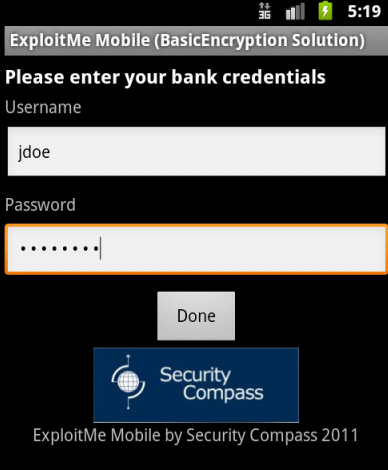
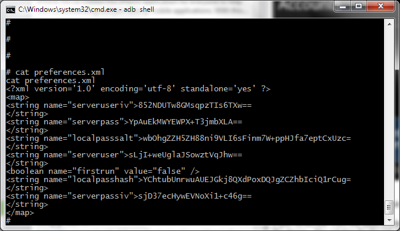

Lab 5 - Client-side Password complexity
This lab uses the solution for the Basic Encryption lab. Remember when we coded the encryption to use a pre-shared key to encrypt our user credentials? Turns out that wasn't the best idea.
Let's first install the BasicEncryptionSolution.apk on to the emulator.
Configure the BasicEncryptionSolution app, by setting the username and password for the user and configuring a local screen lock password.


When the app has fully loaded, the configuration file for the app will have been set. Let's take a look and see how the passwords are stored now in the ExploitMe Mobile BasicEncryptionSolution app.

Browse to the
/data/data/com.securitycompass.androidlabs.basicencryptionsolution/shared_prefs
if you remember from the basic encryption lab, the user credentials for this user was stored in a preferences file and stored insecurely on the device. The solution for the lab resulted in implementing a key based encryption to protect the file from casual prying eyes.
Let's look at preferences.xml 